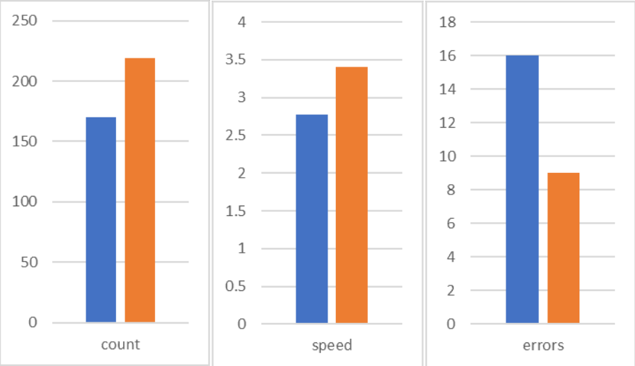

<!DOCTYPE html>
<html lang="en">
  <head>
    <meta charset="utf-8" />
    <meta name="viewport" content="width=device-width, initial-scale=1.0, maximum-scale=1.0, user-scalable=no" />

    <title>The Effects of Body Temperature on Typing</title>
    <link rel="shortcut icon" href="./../favicon.ico" />
    <link rel="stylesheet" href="./../dist/reset.css" />
    <link rel="stylesheet" href="./../dist/reveal.css" />
    <link rel="stylesheet" href="/_assets/theme/solarslide.css" id="theme" />
    <link rel="stylesheet" href="./../css/highlight/zenburn.css" />


  </head>
  <body>
    <div class="reveal">
      <div class="slides"><section  data-markdown><script type="text/template">


## The Effects of Body Temperature on Typing

2010383 Hikaru Suzuki

Members: Kohki Shimomura, Shun Shito

</script></section><section ><section data-markdown><script type="text/template">

## Introduction

* A lot of time to use Computer<br>
→ Ability of Typing keyboards

<hr>

<small>Thomas Witterseh, David P. Wyon, and Geo Clausen(2004)</small><br>
**NO effect**: typing Speed and Error <br>22℃ to 30℃ Room

<small>Seppanen Olli, William J. Fisk, and Q. H. Lei (2006)</small><br>
**Effect**: MAX Office work performance<br>21-22℃ Room

</script></section><section data-markdown><script type="text/template">

## Purpose
**Gap**: Body temperature and Work(Type) performance

**Goal**: To See body temperature's effect<br>
by Putting HOT/COLD source on human's skin directly.


</script></section></section><section ><section data-markdown><script type="text/template">

### Methods

3 experiments: Heating hands and whole body, Cooling hands

Test: Sushida(寿司打)
<small>**Example** Total score +1180yen, correct keys 223, 3.7 key/sec, error keys 31.</small>


</script></section><section data-markdown><script type="text/template">

### Method 1, 2 (heat)
* Test at Usual body temperature
* Warm hands with heat pack / body with bath
<br> → Test at Higher body temperatures

<hr>

### Methods 3 (cold)
* Test at Usual body temperature
* Cool hands with iced water<br>
→ Test at Lower body temperature

</script></section></section><section ><section data-markdown><script type="text/template">

## Results

**Heating** Improved scores<br>
Hand: improved all score<br>
<br>

</script></section><section data-markdown><script type="text/template">

Whole body: improved counts and speed,<br>Error increased
<hr>

**Cooling** decayed scores<br>Error decreased

</script></section><section data-markdown><script type="text/template">

### Results (Cold)

|       | Score | Corrects | key/sec | Error |
|:-----:|:-----:|:--------:|:-------:|:-----:|
| Usual(31.6℃) | -1140 |    116   |   1.9   |   33  |
|  Cold(14.3℃) | -1300 |    100   |   1.6   |   21  |


</script></section></section><section ><section data-markdown><script type="text/template">

## Discussion

These results shows...
* **Almost certainly** body temperature affect
* Less than report by Olli, Fisk, and Lei(2006)<br>
10.8% / 17.3℃ **<** 8.9% / 8℃

</script></section><section data-markdown><script type="text/template">

It can be thought...
* Too short Heating/Cooling time
* Non-linear effect

Further research needs...
* Longer time to heat/cool
* **Temperature Adjustable** heat source

</script></section></section><section  data-markdown><script type="text/template">

## References

* <small>Seppänen, O., Fisk, W. J., & Lei, Q. (2006). Effect of Temperature on Task Performance in Office Environment.</small>

<small>https://escholarship.org/content/qt45g4n3rv/qt45g4n3rv.pdf</small>


* <small>Witterseh, Thomas, David P. Wyon, and Geo Clausen. (2004). The effects of moderate heat stress and open-plan office noise distraction on SBS symptoms and on the performance of office work. *Indoor air* 14(8), 30-40.</small>

<small>https://pubmed.ncbi.nlm.nih.gov/15663458/</small>

* <small>Hedge A, Sakr W, Agarwal A. (2005). Thermal Effects on Office Productivity. *Proceedings of the Human Factors and Ergonomics Society Annual Meeting.* 49(8), 823-827.</small>

<small>https://journals.sagepub.com/doi/abs/10.1177/154193120504900807</small>
</script></section></div>
    </div>

    <script src="./../dist/reveal.js"></script>

    <script src="./../plugin/markdown/markdown.js"></script>
    <script src="./../plugin/highlight/highlight.js"></script>
    <script src="./../plugin/zoom/zoom.js"></script>
    <script src="./../plugin/notes/notes.js"></script>
    <script src="./../plugin/math/math.js"></script>
    <script>
      function extend() {
        var target = {};
        for (var i = 0; i < arguments.length; i++) {
          var source = arguments[i];
          for (var key in source) {
            if (source.hasOwnProperty(key)) {
              target[key] = source[key];
            }
          }
        }
        return target;
      }

      // default options to init reveal.js
      var defaultOptions = {
        controls: true,
        progress: true,
        history: true,
        center: true,
        transition: 'default', // none/fade/slide/convex/concave/zoom
        plugins: [
          RevealMarkdown,
          RevealHighlight,
          RevealZoom,
          RevealNotes,
          RevealMath
        ]
      };

      // options from URL query string
      var queryOptions = Reveal().getQueryHash() || {};

      var options = extend(defaultOptions, {"controls":true,"progress":true,"controlsTutorial":true,"slideNumber":true,"keyboard":true,"overview":true,"help":true,"pause":true,"mouseWheel":false,"pdfSeparateFragments":false,"helpButtonDisplay":"always"}, queryOptions);
    </script>

    <script src="./../_assets/plugin/chalkboard/plugin.js"></script>
    <script src="./../_assets/plugin/toolbar/toolbar.js"></script>
    <script src="./../_assets/plugin/customcontrols/plugin.js"></script>
    <script src="./../_assets/plugin/helpbutton/helpbutton.js"></script>
    <script src="./../_assets/plugin/menu/menu.js"></script>
    <script src="./../_assets/plugin.js"></script>

    <script>
      Reveal.initialize(options);
    </script>
  </body>
</html>
